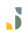

The symbol and the wordmark.
How the SoviCare logo is built, where it may sit, how small it may go and how not to use it. Edition 02 moves the symbol to the Pastel Blue and Green.
1. Figma h7D0eRszARBaWdJT1NWrpZ (SoviCare - Website) wins on every visual value. 2. brand-rules.md wins on compliance and wording. 3. The hub explains and mirrors both. If the hub and Figma disagree, the hub is wrong. The Round-1 logo exploration of Edition 01 is rejected and archived (Archive).
Four pieces make one S.
The symbol is assembled from four Quadrant Kit pieces, each in its own brand colour. The arrangement is fixed.
| Piece | Position | Colour |
|---|---|---|
| Half circle | Upper left, flat edge right | Deep Teal #264653 (--color-brand-deep-teal) |
| Quarter | Upper right | Blue #6E8B97 (--color-brand-blue) |
| Half circle | Lower right, flat edge left | Green #6A8670 (--color-brand-green) |
| Quarter | Lower left | Yellow #FFBE0B (--color-brand-yellow) |
The pieces come from the Quadrant Kit, but the symbol is not a composition to vary. Always these four pieces, in these positions, in these colours. Modularity belongs to the kit, not to the logo.
Edition 02 colour change
--color-brand-blue). Green #2A9D8F → Pastel Green #6A8670 (--color-brand-green). Deep Teal and Yellow are unchanged. Decision of 08.10.2026: the symbol follows the Figma palette.The wordmark is SoviCare in DM Serif Display.
One word, capital S and capital C, DM Serif Display Regular, no extra tracking, Deep Teal on light surfaces and Paper on Deep Teal.
Lockup at the H2 size, 46px (--type-desktop-h2-size). All other dimensions follow from the wordmark size.
Proportions from the Figma header
| Measure | Figma header | Ratio to wordmark size |
|---|---|---|
| Wordmark size | 22px | 1 em |
| Symbol frame width | 28px | 1.27 em (28 / 22) |
| Symbol frame height | 37px (37.24) | 1.69 em (37.24 / 22) |
| Gap, symbol frame to wordmark | 10px | 0.45 em (10 / 22) |
| Alignment | Symbol and wordmark centred on one horizontal axis. | |
Read from the header in homepage desktop 2673-209. The Figma header text still reads "Sovicare" and must change to "SoviCare".
Construction
The dashed box is the exported symbol frame (symbol.svg, 28 × 37.24). The gap is measured from the frame, not from the drawn pieces.

No outlined wordmark or lockup SVG exists yet, so the website and the hub set the wordmark as live text in DM Serif Display. Once the Figma wordmark reads "SoviCare", export it once as an outlined SVG lockup and use that file everywhere. Until then, never imitate the wordmark in another face or redraw letters (the Edition 01 custom "S●vıCare" is retired).
Give the logo the width of its Yellow piece.
Clear space is measured with the logo's own unit, so it scales with the logo.
Clear space
Rule: keep a clear zone the width of the Yellow piece on all four sides of the drawn mark. Nothing else, text or shape, enters it.
The Yellow piece is 6.39 of the frame's 28 units (about 23% of the symbol frame width; 6.4px at the 28px header size). The exported SVG frame already carries this zone: 6.39 units left and right, 7.34 top and bottom (shaded). So: never place anything inside the frame of symbol.svg, and keep the same unit around the whole lockup.
The symbol's mass sits low. When centring it optically in a tile or avatar, nudge it up 2% (brand-rules.md).
Minimum sizes To confirm
Both minimums come from Edition 01, not from Figma. They stay "To confirm" until Avi approves them, and need size tokens.
Paper, Mist or Deep Teal, nothing else.
The logo sits only on Paper, Mist or Deep Teal. Full colour is the default; the one-colour versions are for production that cannot carry four colours (one-ink print, emboss, etch).
--color-surface-paper). symbol.svg, wordmark Deep Teal. The default, as in the Figma header.--color-surface-mist). symbol.svg, wordmark Deep Teal.
SoviCare--color-brand-deep-teal). symbol-on-dark.svg: the Deep Teal piece turns Paper; Blue, Green and Yellow stay. Wordmark Paper. As in the Figma footer (2719-4253).Forbidden backgrounds
This replaces the Edition 01 "twelve approved states", which allowed Clay, Green, Blue and Yellow backgrounds. Decision of 08.10.2026.
Use the files as they are.
Every misuse below changes what the logo is. If a layout seems to need one of them, change the layout.
Use the exported files, never a copy.
Link or embed these SVG files. Do not paste the paths inline into pages or rebuild the mark with CSS.
| Preview | File | Use on | Status |
|---|---|---|---|
| symbol.svg | Full colour, on Paper or Mist. Also the favicon. | Current | |
| symbol-on-dark.svg | Full colour, on Deep Teal. | Current | |
| symbol-mono-deep-teal.svg | One colour, on Paper or Mist. | Current | |
| symbol-mono-paper.svg | One colour, on Deep Teal. | Current | |
| — | Lockup SVG (symbol + outlined "SoviCare"), light and dark | Headers, footers, documents | Planned after the Figma wordmark is corrected |
| — | Favicon PNG set and apple-touch-icon | Browsers and home screens | To confirm sizes and the 16px version |


All four SVG files share one 28 × 37.24 frame with the clear space built in, so they swap without layout changes. Pieces are named teal, blue, green, yellow inside each file.